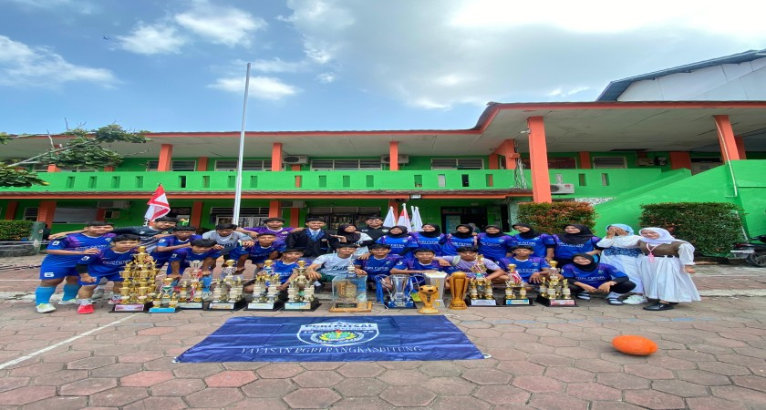
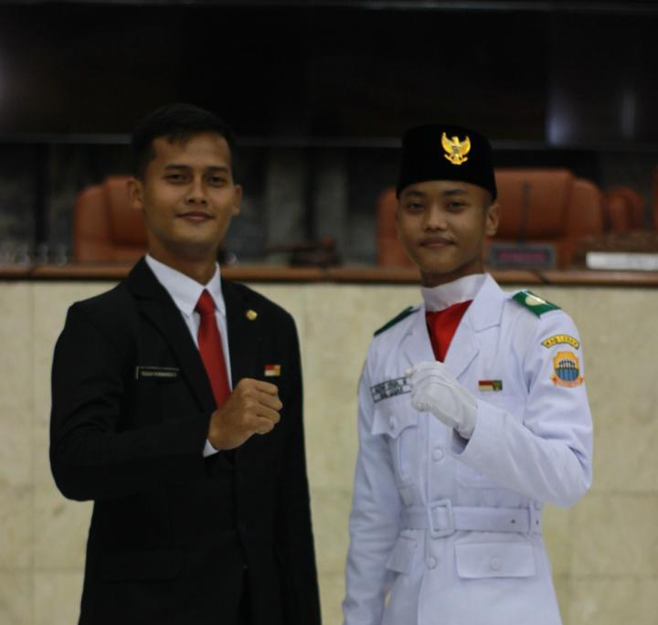

Dedikasi, bakat, dan kerja keras civitas akademika SMKS PGRI Rangkasbitung dalam meraih prestasi gemilang di berbagai ajang kejuaraan.

Ekstra kurikuler Futsal berhasil menorehkan prestasi yang baik dengan menyabet gelar juara pada perlombaan tingkat Kabupaten Lebak dan Provinsi Banten sepanjang tahun 2023-2024.

Alfian Yoga telah selesai menunaikan tugasnya sebagai pengibar bendera pada 17 Agustus 2021.

Tia Artiani siswi Kelas XII Farmasi SMK PGRI Rangkasbitung mengikuti pelaksanaan Lomba Kompetensi Siswa (LKS) SMK Tingkat Provinsi Banten Tahun 2021 mewakili Kabupaten Lebak Bidang Lomba Pharmacy.


Saksikan langsung momen kejuaraan serta dokumentasi foto kegiatan murid di kampus.